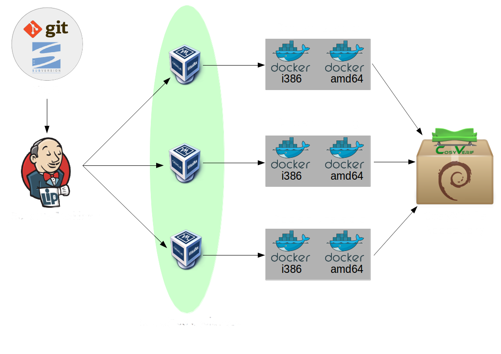

The Build System
The build system of cosyverif is organized according to the following image.

In order to understand how this system works, I'm going to explain everything that happens during a typical build (i.e. when you use the script create_packages to build your project and packages of it).
First, you have to configure Jenkins so that it will automatically detects when there is a change in your source code, and build your project. (Or make your VCS notify Jenkins there's a change in the source code, which is actually the best way to do it).
So, here's what happens when Jenkins decides it's time to build your program (or you tell him to). Jenkins will tell one of the slave machines to download and build your project. In our case, the slave machines are virtual machines.
Once the said slave machine has downloaded the source code of your program, it will try to build your project on the following systems :
- Debian stable i386
- Debian stable amd64
- Debian testing i386
- Debian testing amd64
- Debian unstable i386
- Debian unstable amd64
These builds are done on a minimal Debian system which is on a docker image. Although this seems to be a lot, this is mandatory to check if the user has correctly filled the section of the configuration file regarding the dependencies of his project (and also to check if the project builds normally, assuming the dependencies are filled correctly). Even if the dependencies are filled correctly, one or more builds may fail because some dependencies aren't available on every Debian system. This is not a big deal because if one build fails, it only means that we won't be able to create packages for that system. So, unless all 6 builds fails, the building process will continue.
Now, if one or more builds have been successful, the script will try to build packages of your project for those systems, according to the configuration file you've filled. If one or more packages have been created, they're automatically uploaded on the CosyVerif Repository.
If you're interested by that architecture and you want to have something similar, there's a script that will help you create a slave machine and a repository, with all the programs installed and configured. Here's how to install it and use it.